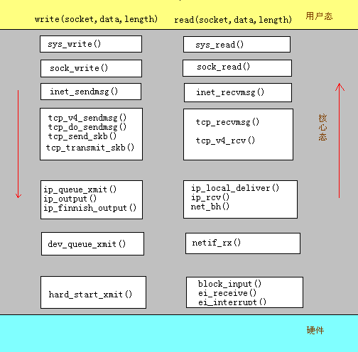
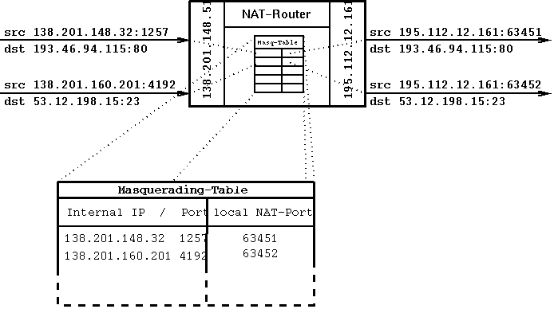
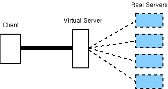
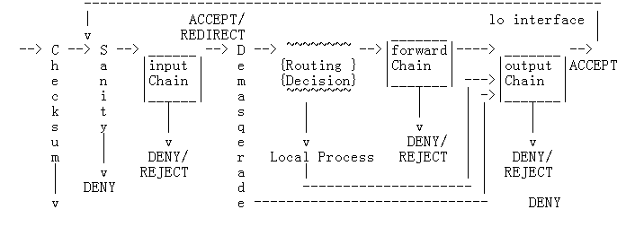

本次讲座完后，不少朋友向我索取讲义，由于工作特别忙，我实在没时间再写一份讲义（非常的抱歉）。恰好有位
lisoleger 将他写的一份相关的文档open出来让我们下载，其中有部分内容与我昨天讲的相吻合，故将其作为本次讲座的讲义。并在此感谢这位lisoleger,他名叫： zhixueyong.
防火墙实现技术分析
Yawl(yawl@docshow.net)
www.docshow.net2000/3/15
1
引言本文以防火墙功能分类为框架
,逐个探讨了每项功能的详细技术及实现,其中具体实现均取自linux系统.之所以采用
linux系统作技术分析,主要是因为其本身已基本实现了防火墙系统的各类功能且经受了足够考验,因此具有极大的参考价值.本文所描述的功能如下
:防火墙的核心功能
(包过滤,伪装,负载均衡)在IP层实现,其余大部分功能属于应用层实现(VPN除外,因为利用了封装机制,很难说究竟在那一层).尽管我们说核心功能在IP层实现, 但实际上只是这些功能函数(call_in_firewall(),call_fw_firewall(),call_out_firewall(),ip_fw_masquerade(),
及ip_fw_demasquerade()等)在网络层被调用,真正在完成这些功能时也用到了上层协议(TCP/UDP/ICMP)的头信息(如根据端口,flag标志,ICMP类型进行过滤等).2 linux
网络部分代码分析(
注:加入这一部分主要是因为目前没有一篇文章结合最新的2.2内核讲述了linux的网络原理,在此介绍一下其流程会有助于整体的理解.)Linux
网络层采用统一的缓冲区结构skbuff(include/skbuff.h)。底层从网络设备接收到数据帧后,分配一块内存,然后将数据整理成skbuff的结构.在网络协议处理的时候,数据均以skbuff的形式在各层之间传递、处理.一个个单独的
skbuff被组织成双向链表的形式.Skbuff
的强大功能在于它提供了众多指针,可以快速的定位协议头位置;它也同时保留了许多数据包信息(如使用的网络设备等),以便协议层根据需要灵活应用.整个网络层的流程如下
(以两个进程通过TCP/IP进行通信为例):
IP
协议层有三个关键函数:ip_rcv()、ip_forward()、ip_output(),分别处理IP层的接收、转发和发送工作.防火墙的功能函数将在此三个函数中调用.3
功能实现分析简单的讲
,网络地址转换(NAT)是将一个(或一组)IP地址转换成另一个(或一组)IP地址.由于网络地址的缺乏和出于安全等因素的考虑
,许多公司和机构采用了私有IP地址(RFC 1918)来建立自己的内部网络,但为了实现与internet的互连,必须对外表现为合法的IP.通过带有NAT功能的路由器或防火墙,便可实现私有与合法IP的转换.概念上
,NAT可分为静态NAT (static address translation)和动态NAT(dynamic addresstranslation):
静态
NAT-----------私有IP与合法IP之间是一一映射关系,每一个内部IP都有一个外部IP与之对应,系统通过维持一张固定的映射表来实现此种功能.linux
中,在2.2.4版本中曾有专门的一部分处理静态的地址转换,并用相应的应用层工具ipnatadm
来管理,但到了2.2.13内核(我主要看的版本)中,无论是文件还是相关函数都有了非常大的改变
.与静态地址转换相关的文件只有/ipv4/ip_nat_dumb.c,其中只有ip_do_nat()一个函数
.此函数在ip_forward(),和ip_output()中被调用.其作用是修改转发和发送的包的源和目的地址
(仅此功能而已).但是我却未能发现与之相关的上层接口和应用层管理工具.(
编译内核时要指定CONFIG_IP_ROUTE_NAT 和CONFIG_IP_MULYIPLE_TABLE).
动态
NAT--------------动态的决定外部与内部的IP地址之间的映射关系.此时可用的合法IP数往往少于内部网的主机数,极端的情况便是linux中的IP伪装(多对一的映射).对实际的应用来说
,此时仅仅改变IP地址已经不够,必须同时利用TCP/UDP的端口号来实现多台主机共用一个地址.此时防火墙必须维持一个动态的映射表,且随时要对此表进行更新.原理如下图所示：

伪装功能相关文件有
(均在 /ipv4目录):ip_masq.c ip_masq_app.c ip_masq_autofw.c
ip_masq_cuseeme.c ip_masq_ftp.c ip_masq_irc.c
ip_masq_mfw.c ip_masq_mod.c ip_masq_portfw.c
ip_masq_quake.c ip_masq_raudio.c ip_masq_user.c
ip_masq_vdolive.c
头文件有
:#include <net/ip_masq.h>
#include <linux/ip_masq.h>
#ifdef CONFIG_IP_MASQUERADE_MOD
#include <net/ip_masq_mod.h>
#endif
其中最主要的文件是
ip_masq.c,它定义了对应用层的接口和实际的地址伪装处理过程.其余文件大多是根据专门应用的扩展.流程为
(没有结合包过滤):
当
IP层接受到信息(ip_rcv)以后,在确定信息准确无误后,查路由,伪装的包和去往防火墙本身的包的目的地址均是防火墙的对外地址,IP层将用ip_local_deliver()进行处理,其中便调用了ip_fw_demasquerade()。解伪装会将真正的目的地址和端口恢复出来，经过再次查路由，如果是发往本地的包,则交给相应的上层去处理(tcp_ipv4_rcv, udp_rcv, raw_rcv 等),否则调用ip_forward().ip_fw_masquerade()
则在ip_forward()中被调用.具体算法
:公开地址与内部地址的映射表采用的数据结构是ip_masq(在/include/net/ip_masq.h中定义),其格式为:
struct ip_masq {
struct list_head m_list, s_list, d_list; /* hashed d-linked list heads */
atomic_t refcnt; /* reference count */
struct timer_list timer; /* Expiration timer */
/***********************************************************************
以下几个是最重要的参数,分别为所用的协议(protocol),源、目的地址(saddr,daddr),源、目的端口(sport,dport)， 经伪装后的地址、端口(maddr,mport).
**********************************************************************/
__u16 protocol; /* Which protocol are we talking? */
__u16 sport, dport, mport; /* src, dst & masq ports */
__u32 saddr, daddr, maddr; /* src, dst & masq addresses */
/**********************************************************************/
struct ip_masq_seq out_seq, in_seq;
struct ip_masq_app *app; /* bound ip_masq_app object */
void *app_data; /* Application private data */
struct ip_masq *control; /* Master control connection */
atomic_t n_control; /* Number of "controlled" masqs */
unsigned flags; /* status flags */
unsigned timeout; /* timeout */
unsigned state; /* state info */
struct ip_masq_timeout_table *timeout_table;
};
因为正常情况下linux不会用到32K以上的端口号,负责伪装的程序把61000-65096范围的
端口用作伪装,所以缺省情况下同时支持的最大伪装数是4096个.当然可以通过修改源程
序来更改.相关定义为:
#define PORT_MASQ_BEGIN 61000
#define PORT_MASQ_END (PORT_MASQ_BEGIN+4096)
伪装部分在IP层被调用,它为IP层提供了四个函数作为调用接口:
int ip_fw_masquerade(struct sk_buff **, __u32 maddr); /*tcp,udp协议的伪装*/
int ip_fw_demasquerade(struct sk_buff **); /*tcp,udp协议的解伪装*/
int ip_fw_masq_icmp(struct sk_buff **, __u32 maddr); /*icmp协议的伪装*/
int ip_fw_unmasq_icmp(struct sk_buff *); /*icmp协议的解伪装*/
我们着重分析ip_fw_masquerade：
因为只有从内部网到外部网需要伪装,所以ip_fw_masquerade的调用出现在ip_forward()
函数中.
ip_forward()的函数流程为:
1.因为ip_forward()接收的参数是一个skbuff,它首先利用skbuff的指针,把IP头找出:
struct iphdr *iph; /* Our header */
iph = skb->nh.iph
2.因为ip_forward()由ip_rcv()调用,而在ip_rcv()中已查过了路由,此处只需利用skbuff的指针定位路由信息即可:
struct rtable *rt; /* Route we use */
rt = (struct rtable*)skb->dst;
3.如果此IP包的生存时间(ttl)已到,则丢弃.
if (iph->ttl <= 1)
goto too_many_hops;
4.如果在选项中指定了严格的源路由功能(strict source routing) ,且此处无法达到,也丢弃:
if (opt->is_strictroute && rt->rt_dst != rt->rt_gateway)
goto sr_failed;
5.如果指定的伪装功能,且上层协议是ICMP,则在此处处理一部分,且跳过后面的包过滤处理
( Why ? ):
#ifdef CONFIG_IP_MASQUERADE
if(!(IPCB(skb)->flags&IPSKB_MASQUERADED)) {
if (iph->protocol == IPPROTO_ICMP) {
........
fw_res = ip_fw_masq_icmp(&skb, maddr);
if (fw_res)
/* ICMP matched - skip firewall */
goto skip_call_fw_firewall;
........
}
}
#endif
6.如果上一步的前提不成立,则要经过一次包过滤.
fw_res=call_fw_firewall(PF_INET, dev2, iph, NULL, &skb);
7.我们知道,在当前版本中,包过滤与伪装功能在许多地方是紧密联系在一次的,如采用同样的配置工具ipchains,同样的配置接口setsocketopt(),其中是否启动伪装的标志也在放火墙的chains中,即如果你指定了ipchains -A forward -j MASQ,则call_fw_firewall()会返回FW_MASQUERADE, 如果这样,程序将进行到调用ip_fw_masquerade()的地方.
skip_call_fw_firewall:
.......
if (maddr == 0)
maddr = inet_select_addr(dev2, rt->rt_gateway, RT_SCOPE_UNIVERSE);
ip_fw_masquerade(&skb, maddr);
.......
8.因为伪装可能改变了skbuff的一些信息,此时要重新定位一下IP头及其选项:
iph = skb->nh.iph;
opt = &(IPCB(skb)->opt);
9.因为转发的数据总是要送出的,紧接着会调用call_out_firewall(),并把数据送出去.
(后面分析,此处略)
ip_fw_demasquerade的调用出现在ip_local_deliver()中.
1.如果需要,首先重组IP包:
if (sysctl_ip_always_defrag == 0 &&
(iph->frag_off & htons(IP_MF|IP_OFFSET))) {
skb = ip_defrag(skb);
if (!skb)
return 0;
iph = skb->nh.iph;
2.然后调用ip_fw_demasquerade
ret = ip_fw_demasquerade(&skb);
3.再次调用路由查找,根据真正的IP来发送此包.
ip_route_input(skb, iph->daddr, iph->saddr, iph->tos, skb->dev)
4.根据路由发往上层或是转发(略).
下面我们便说明一下伪装是怎么工作的,即ip_fw_masquerade的流程:
因为经过伪装后的地址是防火墙连结公网的IP,这个值(maddr)已通过参数送到ip_fw_masquerade函数中:
int ip_fw_masquerade(struct sk_buff **skb_p, __u32 maddr)
其主要工作便是分配空闲端口,并改变IP头.
1.将 skbuff的h.raw指针指向IP的数据部分(一般是TCP,UDP的头),并得到数据部分长度和
传输层协议的数据偏移部分.
h.raw = (char*) iph + iph->ihl * 4;
size = ntohs(iph->tot_len) - (iph->ihl * 4);
doff = proto_doff(iph->protocol, h.raw, size);
/*doff holds transport protocol data offset*/
2.根据上层协议(iph->protocol)及需要,要一些校验和的工作(why?)
3.检查是否已经有了合适的映射关系,有则返回相应的ip_masq结构.
struct ip_masq *ms;
ms = ip_masq_out_get_iph(iph);
ip_masq_out_get_iph(最终是__ip_masq_out_get)会查找以&ip_masq_s_table[]
开头的结构,检查是否已由相关的映射.
if (d_addr==ms->daddr
&& d_port==ms->dport
&& s_addr==ms->saddr
&& s_port==ms->sport
&& protocol==ms->protocol
&&((ms->flags&(MASQ_DADDR_PASS|MASQ_DPORT_PASS
|IP_MASQ_F_NO_SADDR|IP_MASQ_F_NO_SPORT)) == 0)
4.如果还没有建立映射,则新建:
ms = ip_masq_new(iph->protocol,
maddr, 0,
iph->saddr, h.portp[0],
iph->daddr, h.portp[1],
0);
ip_masq_new将负责寻找合适的端口.
5.现在,已经有了合适的ip_masq结构,即映射关系,则开始改头信息(地址和端口都改):
iph->saddr = ms->maddr;
h.portp[0] = ms->mport;
就是这么简单:-)
6.头变了,当然校验和有要重算一遍.至此过程结束.
因为ICMP协议没有端口的概念，所以只能利用ICMP协议头中的ID项作为源端口使用，其余流程大同小异。
伪装模块留给上层的配置接口与包过滤相同
,都是利用setsocket系统调用。这样可以保证系统总的系统调用数目和名称保持稳定。对于我们的专用系统来说，也可以采用增添新的系统调用的方式以增加处理的便利。int setsocket (int socket, IPPRPTO_IP, int command, void *data, int length).
伪装作为防火墙规则链中的行动项出现
(MASQ).如果某个规则匹配后行动项是MASQ,则调用伪装功能(如上文).
补充说明
:算法的难度主要在于动态映射表的维护(包括端口号的分配,识别及超时处理等),还有就是在处理不同协议时会有额外的问题
,如有的应用层协议需要对内建立连接.linux
针对有此类要求的协议均做了相应处理.3.2
负载均衡(load balance,又称virtual server)(
严格的讲,负载均衡由多种不同实现技术,此处仅指在IP层实现的方法.)负载均衡也是利用
NAT技术,但实现了不同的功能.传统NAT是改变从内部网出来的数据包的 IP,而负载均衡则改变从外部网进来的数据包的IP. 其目的是使数据处理工作分摊到不同的主机(这些主机往往是镜像关系).
若干服务器
(往往处于停火区上)对外体现为一个IP,在经过防火墙后,经由一定的分配算法, 数据包的目的地址有了变化(NAT),数据被均匀的交给多个主机.此时防火墙所维持的映射表并不复杂
,并不像伪装需要维持一个动态的映射关系.其核心在于采用何种分配算法
.典型的算法有:*Random:
顾名思义,随机的分配一个服务器.*Round Robin:
轮流分配.*
询问主机: 防火墙询问主机以决定由谁处理,前提是server 上必须有相应软件以进行双方通信.
*
防火墙监测: 防火墙通过一定手段,来决定哪一个服务器负载最小.如对所有机子发出ping
消息,以延迟时间作为判断标准.
从公平和延迟时间的综合考虑
,采用前两种可能较好.在现有产品中,checkpoint实现了所有算法
,并将决定权交给了用户.负载均衡并没有出现在
linux的正式版本里,但有相应的补丁文件来实现此功能.详见
Linux Virtual Server Project( proxy.iinchina.net/~wensong/ippfvs/)主要有以下几个文件
:ip_vs.c ip_vs_rr.c ip_vs_wrr.c ip_vs_wls.c
ip_vs.c
是主流程,其余的是三个分配算法,分别为: Round Robin, Weighted Round Robin,Weighted Least Connection .
具体算法
(未分析).
3.3
包过滤.包过滤在理论上是在
IP层工作,可为了完成丰富的功能,必须同时利用其他层的信息.如用于端口过滤,SYN过滤,设备相关过滤时.Linux
内核中有三条内置的规则链(input chain, forward chain, output chain),分别对应接收检测,转发检测和发送检测(内置链不可删除),每一条chain 包含一系列过滤规则及链的缺省策略.其实现过程如下
:*
在不同检测点进入相应过滤链.*
顺序检查每一条过滤规则,找出与之匹配的规则(ACCEPT, REJECT, DENY, MASQ,REDICT,RETURN).
*
当遇到第一条比配的规则时采取以下行动:a.
将规则应用于此数据包;b.
每条规则都包含有packet和byte数的计数器,当匹配时,此计数器加一.(
用ipchains �CL �Cv 可察看通过每条链的包与比特数.)c.
如果设置记录功能,则记录.*
当没有规则匹配时,采用链的缺省策略.相关文件为
:ipfw.c, ipfw.h(IP包过滤功能),firewall.c, firewall.h(通用包过滤功能接口).具体流程为
:.

结合代码来说
:ip_rcv()
是IP层的接收函数,它首先检查:a.
b..
版本号是否正确(4? 6?);c.
校验和是否正确.if (skb->len < sizeof(struct iphdr))
goto inhdr_error;
if (iph->ihl < 5 || iph->version != 4 || ip_fast_csum((u8 *)iph, iph->ihl) != 0)
goto inhdr_error;
在确定这些信息无误后
,则调用包过滤检测:fwres = call_in_firewall(PF_INET, dev, iph, &rport, &skb);
fwres
返回的便是匹配出来的规则.如果不接受,则立即丢弃:f (fwres < FW_ACCEPT && fwres != FW_REJECT)
goto drop;
否则查找路由
:ip_route_input(skb, iph->daddr, iph->saddr, iph->tos, dev)
如果
IP包有其他选项(iph->ihl > 5),则需多加一段处理(略).此时路由信息已包括在了
skbuff数据结构的dst 项中,紧接着调用skb->dst->input(skb)
继续处理 .对发往本地高层协议的包
,则实际调用了ip_local_deliver(),对转往其他机子的包
,则实际调用ip_forward()处理.
值得注意的是
,经伪装的包在回来时,其目的IP是防火墙的IP,经路由后,也送入ip_local_deliver()处理,在ip_local_deliver()内部先解伪装,然后再查一次路由,发往本地的直接送往高层,,否则依然调用ip_forward().ip_forward()
中则包含了call_fw_firewall()的调用.在发往底层的时候
(ip_output,最终是ip_queue_xmit),调用了call_out_firewall().整个包过滤部分的初始化工作在
ip_fw.c中有定义:ip_fw_init()
察看
call_in_firewall, call_fw_firewall , call_out_firewall的定义后发现,其核心过程都在于
ip_fw_check() 这个函数,它完成了数据包与规则的实际匹配.ip_fw_check()
函数分析：防火墙的规则链由
ip_chain数据结构(ip_fw.c)描述,其中包含了指向链中第一条规则的指针和链的缺省策略.每个规则由
ip_fwkernel数据结构(ip_fw.c)描述,其中的重要一项是ip_fw数据结构(ip_fw.h):struct ip_fw
{
struct in_addr fw_src, fw_dst; /* Source and destination IP addr */
struct in_addr fw_smsk, fw_dmsk; / * Mask for src and dest IP addr */
__u32 fw_mark; /* ID to stamp on packet */
__u16 fw_proto; /* Protocol, 0 = ANY */
__u16 fw_flg; /* Flags word */
__u16 fw_invflg; /* Inverse flags */
__u16 fw_spts[2]; /* Source port range. */
__u16 fw_dpts[2]; /* Destination port range. */
__u16 fw_redirpt; /* Port to redirect to. */
__u16 fw_outputsize; /* Max amount to output to NETLINK */
char fw_vianame[IFNAMSIZ]; /* name of interface "via" */
__u8 fw_tosand, fw_tosxor; /* Revised packet priority */
};
其中包含了要匹配的所有信息
(源、目的地址，源、目的端口，协议，flag标志，接口名等)，尽管时间信息并没有加进去，但我们可已通过不同时间更换不同规则的策略来处理与时间有关的规则。
ip_fw_check()
所做的就是将每一个ip包与规则链中的每一条规则(实际就是ip_fw数据结构所描述的内容)按照链表的组织顺序一一比较,若匹配则并返回规则的行动项.规则的修改通过
setsockopt系统调用实现，其格式和命令请参看man文档（man ipfw）3.4
日志在
linux系统中,内核产生的信息可用printk()函数打印出来,其语法与printf()基本一致.如在系统启动时所看到信息都是通过此函数打印到屏幕的.printk打出的信息往往以<0><2>…<7>这样的被括号括起来数字开头,这些数字说明了消息的重要级别,其中<0>级别最高.高于一定的优先级的信息会打印到屏幕上,否则保留在系统的缓冲区中.在系统正式启动后
,往往启动klogd守护进程通过syslog()系统调用,或读取proc文件系统(cat /proc/kmsg)来从系统缓冲区中得到经printk发出的信息(注意缓冲区中的信息经一次读取后便清空).另一个守护进程
syslogd又从klogd处得到信息,在将按优先级处理后,根据/etc/syslog.conf的设置将日志存储与不同的文件,如/var/log/messages.如果启动了ipchains的日志功能(-l 参数),最终的日志便存储在其中.在
ip_fw.c中定义了一个专门的函数写日志:static void dump_packet( )
函数很简短
,只是定义了一个格式,再用printk()打出来.如果关掉
klogd,而用cat /proc/kmsg的话,则可直接看到其打印的信息,如:<6> Packet log : input DENY etho PROTO=17 192.168.2.1:53 192.18.168.1.1:1025
L=34 S=0x00 I=18 F=0x0000 T=254
第一个
”<6>” 说明了消息的优先级(KERN_INFO)如果观察
/var/log/messages的记录,则发现syslogd给每条记录都加上了时间.如果要打印任何其他信息
,都可通过修改dump_packet( )来实现.3.5
流量统计linux
本身只提供经过每条规则链的包数量与比特数量的统计(ipchains �CL �Cv可察看).对于防火墙较重要的以IP为坐标的流量并未统计.
我们可采用两种办法:
一:在内核中引入一个新的数据结构来描述每个IP及其服务的流量(为了效率,可
采用树状链表),每当一个数据包来的时候.查找此结构,并将相应的计数器加一.
二:通过日志记录,用统计的办法来得出流量.
因为前者增大了网络层处理的开销
(尤其是一个大的站点有很分散的人访问),后者应该是一种最为理想的方式
.3.6 VPN
VPN
还没用并入而且在短时间内也不会并入linux系统内核.目前有三种实现方法
:一
:FreeS/WAN project, 遵循IPSEC & IKE标准,提供了标准的VPN解决办法.目前已推出了1.3 版.通过补丁的办法实现与内核的合成.
详见www.freeswan.org
具体实现
:如果将
freeswan编入内核,在查看网络设备时(ifconfig),会发现多了一个设备ipsec0, 我们可以通过设置路由表使去往另一机构的数据通过此设备发送,所有通过ipsecN设备的数据包均经过标准加密算法加密并重新打包后发往ppp0（或其他连往外部接口的设备），从这个设备将数据真正发送出去。二
:利用sshssh
可以实现加密的telnet和X11会话,其加密也可与隧道机制一起构成VPN解决方案.具体实现可参阅
VPN mini HOWTO,但这并不是”标准”的解决办法.三
: 利用PPTP目前
linux上已有了pptp的server和client端程序.缺点：
pptp不支持加密。